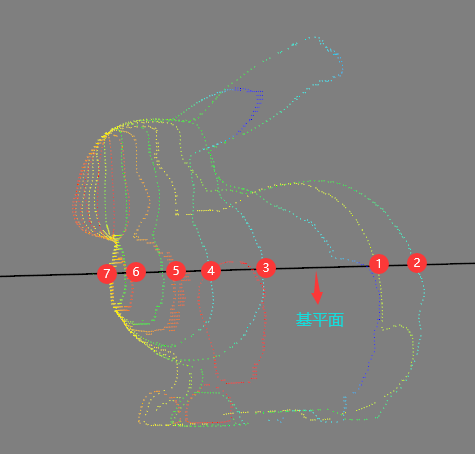
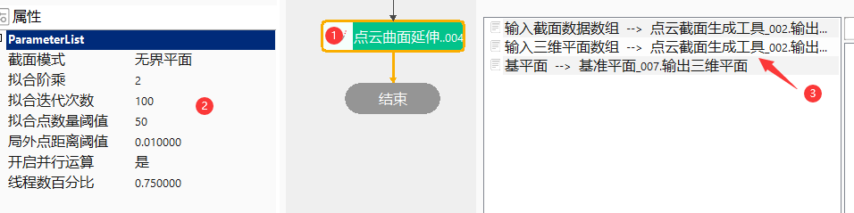

点云曲面延伸点生成工具主要将点云截面生成工具获取的截面点拟合成曲线，计算曲线和基平面（基准面需要与截平面垂直）的交点，即生成扩展点。

该工具主要与截面生成工具搭配使用，用于计算截面生成工具截取到的点云数据与设置的基平面求交点的场景；
添加“点云曲面延伸点生成工具”，并根据要求链接相关数据链，如图3.1所示；

无
| 参数名称 | 参数描述 |
|---|---|
| 输入截面数据数组 | 输入截面数据 |
| 输入三维平面数组 | 输入截取点云数据时无界平面 |
| 输入三维矩形平面数组 | 输入截取点云数据时三维矩形平面 |
| 输入三维圆形平面数组 | 输入截取点云数据时三维圆形平面 |
| 基平面 | 基准平面，需要与截平面（输入三维平面数组/输入三维矩形平面数组/输入三维圆形平面数组）垂直 |
| 参数名称 | 参数描述 |
|---|---|
| 截面模式 | 包括三种：无界平面、三维矩形平面、三维圆形平面 |
| 拟合阶乘 | 每个截平面的点集拟合曲线时拟合阶乘，范围为[1，10] |
| 拟合迭代次数 | 每个截平面的点集拟合曲线时迭代的次数，范围为[1，1000] |
| 拟合点数量阈值 | 参与拟合的最少点数量，范围为[1，100000000] |
| 局外点距离阈值 | 判定为局外点的距离极值，范围为(0，100000000] |
| 开启并行运算 | 否开启并行运算，选择是时，算法将开启OpenMp并行计算方式，可以提升计算速度，但可能出现耗时不稳定的情况，选择否时，算法将关闭OpenMp并行计算 |
| 线程数百分比 | 设置并行运算的线程数百分比，有效范围为 (0, 0.75]，对应表示(0%, 75%]百分比范围 |
| 参数名称 | 参数描述 |
|---|---|
| 输出点集 | 输出扩展点集 |
| 参数名称 | 参数描述 |
|---|---|
| 输出点集 | 输出扩展点集 |
| 执行结果 | 工具执行结果 |
| 执行时间 | 工具执行时间 |
参见“\Samples\3D\点云\点云截面生成工具.gvp”。